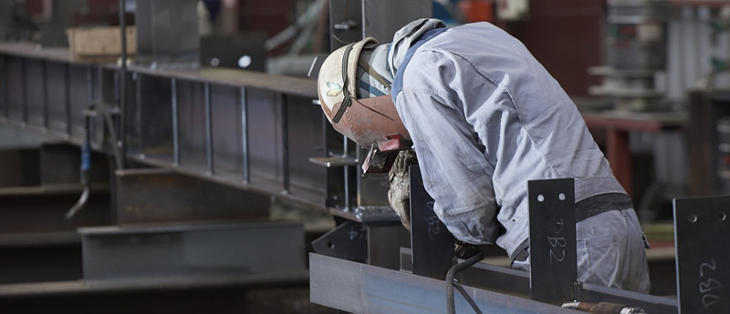

长胜机电 值得信赖--长胜机电闪耀第二十一届埃森展
2016-08-09
展会期间展示了奥太全系列产品：逆变焊机、机器人配套电源、管道焊机、机器人弧焊应用及自动焊设备等，并突出地演示了行业先进的焊接工艺。现场演示的产品有：Pulse MIG-500i智能化脉冲多功能焊机、MAG-350L超低飞溅薄板焊机、信息化焊接群控管理系统、机器人专用弧焊电源WSM-400R、MIG-500RP、MAG-350RL、焊接机器人系统及专机配套交流方波双丝埋弧焊等。
展会期间展示了奥太全系列产品
展会期间展示了奥太全系列产品：逆变焊机、机器人配套电源、管道焊机、机器人弧焊应用及自动焊设备等，并突出地演示了行业先进的焊接工艺。现场演示的产品有：Pulse MIG-500i智能化脉冲多功能焊机、MAG-350L超低飞溅薄板焊机、信息化焊接群控管理系统、机器人专用弧焊电源WSM-400R、MIG-500RP、MAG-350RL、焊接机器人系统及专机配套交流方波双丝埋弧焊等。